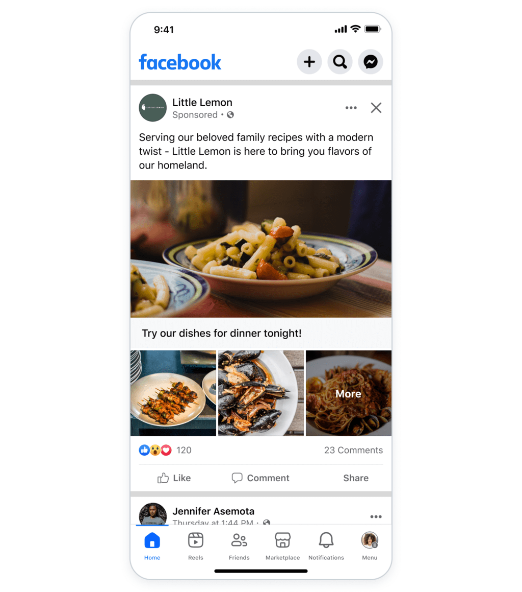

六大广告格式
| 类型 | 示例 |
|---|---|
| 单图片广告【B2B】 所有广告目标均支持使用单图片广告 (Single Image Ad) 格式。 推荐的文案长度为正文栏位 125 个字符，标题栏位 40 个字符，描述栏位 25 个字符。不过，您的文案在不同的版位和设备上可能会被截断。尽量让文本简短有力，以减少被截断的情况。 |
 |
| 视频广告【B2B】 所有广告目标均支持使用视频广告。创作时长不超过 15 秒的视频，以吸引受众关注和持续互动。 |
|
| 幻灯片 可结合使用多个图片素材、文本和声音。 所有广告目标均支持使用幻灯片 幻灯片广告加载更快、显示更流畅，更适合触达网络差的地区(印度、东南亚、非洲等新兴市场) |
|
| 精品栏广告【零售】 您可将图片和视频加以结合，从而提升发现率和销量。您可以向受众展示多达 50 款商品，吸引他们浏览和购买。用户点击或轻触广告后，即可进入全屏模式查看更多商品。 |
 |
| 即时体验【零售】 用户在点击或轻触广告后跳转至落地页 这类广告的加载速度比标准移动网页更快。用户可以查看视频和照片、滑动浏览轮播图片、填写表单、快速查看商品，还可以探索包含标记商品的生活类图片。 Meta 即时体验的落地页是点广告后在 Facebook/Instagram 应用内秒开的全屏页面，不跳出应用。 |
 |
| 轮播【B2B】 单条轮播广告 (Carousel Ad) 中能展示多达 10 个可点击的图片和视频素材。您可以优先展示表现最佳的图卡。任何广告目标都支持所有这些广告格式。 |
 |
| # 版位与尺寸规范 | |
| ## meta广告版位类型 | |
| - Facebook 版位包括： | |
| - 动态 | |
| - 快拍 | |
| - Reels | |
| - 搜索结果 | |
| - 发现 Facebook 商家 | |
| - 视频动态 | |
| - 视频插播位 | |
| - Marketplace | |
| - 右边栏 | |
| - Instagram 版位包括： | |
| - 动态 | |
| - 快拍 | |
| - Reels | |
| - 搜索结果 | |
| - Instagram 发现 | |
| - Messenger 版位包括： | |
| - 收件箱 | |
| - 快拍 |
各版位广告的尺寸与视频市场
尺寸、格式与用户行为习惯
用户在不同版位的行为习惯也存在差异。在 Instagram，用户可能更喜欢与富有视觉吸引力的内容互动，而在 Facebook，用户可能对文字占比较多的广告更感兴趣。用户在不同版位的注意力持续时间也不同。在 Instagram 快拍，用户通常只花几秒钟的时间来浏览广告。而在 Facebook，他们则可能会投入更多的时间。
1. Facebook 动态 (Facebook Feed)
- 素材尺寸与宽高比：最通用的是 1080 x 1080 像素，宽高比 1:1。也支持 1080 x 1350 像素，宽高比 4:5，竖版在手机上占据更多屏幕，效果更好。横版 1.91:1 也支持，但展示面积较小。
- 支持格式：单图、单视频、轮播都支持。视频建议时长 15秒以内，自动静音播放，需要加字幕。
- 用户行为习惯：用户是上下滑动浏览，停留时间短，习惯看标题、正文和评论。互动方式是点赞、评论、分享和点击链接，适合用清晰的产品图 + 强有力的标题来吸引点击。
2. Instagram 快拍 (Instagram Stories)
- 素材尺寸与宽高比：必须是全屏竖版 1080 x 1920 像素，宽高比 9:16。如果用 1:1 的图，上下会留出大面积空白，体验很差。
- 支持格式：单图 5秒、单视频最长 60秒。顶部和底部约 250像素是安全区，要避开头像、回复框，不要把重要文字和按钮放在那里，否则会被遮挡。
- 用户行为习惯：用户是点击/轻扫切换，沉浸式全屏观看，节奏非常快。互动方式是向上滑动、点击贴纸、投票、问答和“发消息”按钮，更偏向轻松、原生、互动性强的内容，不适合放太多文字。

视频制作建议
- 积极利用视频
- 结合使用多种格式的广告创意（例如结合使用静图和视频）
- 视频要尽可能简短，同时又能完整叙事。用户更有可能完整观看长度在 15 秒内的视频广告
- 对于长度无法缩短至 15 秒内的视频，可考虑使用视频插播位。有声播放的视频插播广告 (In-Stream Video Ad) 能吸引用户长时间观看，最适合用于传递更为复杂的营销信息。详细了解视频插播广告。
- 品牌元素
- 在视频开头 3 秒内醒目展示品牌、徽标或商品，并在视频结尾再次展示上述元素。
- 在整个视频中使用具有品牌特色的色彩、主题和图像。
- 包含更具吸睛效果的动态图片。
- 文案
- 务必要告诉用户，在看到您的广告后应采取什么操作，这一点很重要。所有文案都应该契合此目标。措辞简洁，对于大多数版位，推荐的文案长度为正文字段 125 个字符，标题字段 40 个字符，描述字段 25 个字符。
- 图片
- 使用高清图片，避免使用过度精修的图片。
- 展示品牌或徽标。
- 展示人们是如何使用您的商品或服务的，这有助于受众将自己代入其中，想象使用场景。
- 裁剪图片，展示关键部分。若想在同一条广告中展示多张图片，可使用轮播格式。
- 声音与字幕
- 在设计移动视频广告时，应确保其在有声和静音播放时都能取得良好的效果。
- 添加说明文字或字幕。
- 以创意方式展示徽标和带有品牌标识的商品照片，帮助宣传品牌。
- 确保视觉素材能吸引眼球，即使没有声音也易于理解。
行动号召按钮
| 目标 | 按钮 |
|---|---|
| 方便用户预订旅游产品或预约服务。 | 立即预约 |
| 方便用户向餐厅订餐。 | 立即订餐 |
| 让用户轻轻一点即可致电商家。 | 立即拨打 |
| 引导用户在网站上填写表单，让您能挖掘更多潜在客户。 | 联系我们 |
| 方便用户通过 Facebook 向商家发送消息。 | 发消息 |
| 引导用户在网站上填写表单，让您能挖掘更多潜在客户和订阅用户。 | 立即注册 |
| 引导用户在商家的 Facebook 公共主页上填写表单，以请求获取更多业务资讯。 | 立即询价 |
| 鼓励用户在 Facebook 公共主页或网站上观看视频。 | 更多视频 |
| 引导用户前往目标位置，找到商家及其提供的商品或服务的更多信息。 | 详细了解 |
| 吸引更多用户前往商家的网站或 Facebook 公共主页浏览和购买商品。 | 去逛逛 |
| 吸引更多用户前往商家的 Facebook 公共主页查看和领取优惠。 | 领取优惠 |
| 引导用户前往应用，助您提升下载量或使用率。 | 使用应用 |
| 鼓励用户下载或玩游戏。 | 玩游戏 |
| # 广告文案技巧 |
广告的文本部分

撰写广告文案技巧
- 讲述品牌故事：通过添加广告文案来讲述您的品牌故事，重点宣传品牌的独特之处。故事营销是与受众交流互动最有效的方式之一。
- 使用话题标签：在广告中使用话题标签、地点标签和提及他人来提升覆盖人数。确保您仅使用与广告相关的特定话题标签，并避免在内容中填充过多的话题标签。
- 直接与受众交流：撰写广告文案时要考虑到受众，最好像是在直接与他们对话一样。
- 保持风格统一：在每条广告中都使用相同的语气，这样无论受众在何处看到您的广告，都能轻松认出您的品牌。同时，请确保措辞简单明了。
- 制造紧迫感：使用诸如以下的词语：立即、现在、仅限本周！ 加上时间限制有助于激发受众行动力